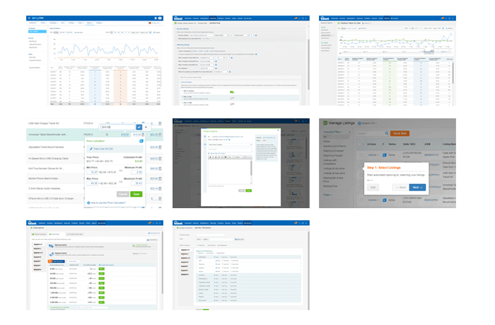

BQool 軟體介面
工作內容: 軟體UI規劃, 軟體頁面設計, div + css + jquery + RWD, 公司管理後台製作
設計整個軟體頁面, 包括事前溝通與整體規劃都要銜接工程端與使用端的需求, 頁面中有許多需套用jquery的動作, 例如左欄隱藏, table隨視窗縮放, 跳出選擇視窗, 資料儲存, 軟體快速入門介紹, 報表等等, 也讓我對jquery的使用更為熟練。 還有RWD的應用讓頁面可以適用於平版, 對我而言是個挑戰也是很難得的經驗。
